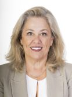
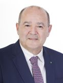
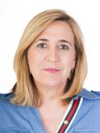

Listas electorales del 29N · Comunitat Valenciana
Listas del 29N en Alicante: 9 candidaturas y 108 candidatos al Congreso
Todos los candidatos al Congreso y al Senado por Alicante, puesto a puesto. 12 escaños en juego.
Por Nacho G. del Álamo · Actualizado el
¿Quiénes son tus diputados por Alicante? Los de la legislatura que acaba y quién repite el 29N →
Candidatos al Congreso por Alicante (2026)
9 candidaturas con 108 titulares. La raya marca el puesto 12: los escaños que reparte la provincia. diputado/a: tuvo escaño en la legislatura que acaba. repite: ya fue candidato en 2023.
PP PARTIDO POPULAR (PP)
- Macarena Montesinos De Migueldiputado/arepite
- César Sánchez Pérezdiputado/arepite
- María Gómez García
- Joaquín Melgarejo Morenodiputado/arepite
- Celia María Lastra Díaz
- José Camarasa Matea
- María Soledad Gallud Sampere
- Javier Navarro Adrián
- Adela María Moncho Mengual
- Jesús Plaza Rodríguez
- Eva Sandín Cortés
- Juan Molina Beneitorepite
3 suplentes
- María García Pascual
- Francisco Cano Murcia
- Silvia Fernández García
PSOE PARTIDO SOCIALISTA OBRERO ESPAÑOL (PSOE)
- Antonio Alfonso Francés Pérez
- María del Pilar Gay Bódalo
- Fulgencio José Cerdán Barceló
- María Araceli Poblador Pachecodiputado/arepite
- Antonio Jesús Rodes Juan
- Eva María Delgado Cabezuelo
- Enrique Moll Briones
- María Teresa Signes Pont
- Fernando David Portillo Esteve
- María Francisca Márquez Bonmatí
- Miguel Domínguez García
- Asunción Llorens Ayela
5 suplentes
- Tomás Ruiz García
- Claudia Cabrera Ronda
- Miguel López Sánchez
- Patricia García Benesiu
- Ignacio González López
VOX VOX (VOX)
- David García Gomisdiputado/arepite
- Ana María Cerdán Martínez
- José María Sánchez Garcíadiputado/arepite
- Irene González Fernández
- Adrián García Martínez
- Mercedes García Ramírez
- Manuel Francisco Ortín Botella
- Sonia Mercedes Sáez Medina
- Joaquín Giménez Soriano
- Francisca Vicente Cremadesrepite
- José Manuel García Escolano
- Gema Aleman Pérez
4 suplentes
- Walter Quintero Betancourt
- Ana Vega Campos
- Eduardo Gutiérrez de Cabiedes Hidalgo de Caviedes
- María González Alonso
COMPROMIS-EUPV-PODEM-ERPV COMPROMÍS: FRONT VALENCIÀ (COMPROMIS-EUPV-PODEM-ERPV)
- María Teresa Pérez Díazrepite
- Natxo Bellido Suay
- Alicia Rius Buitrago
- Francisco Iniesta López
- Verònica Jerez Mira
- Andreu Bernabeu Martínez
- Sophia Siobhan O'Flaherty López
- Aitor Juan Luz
- Ana Quinto Salort
- Òscar Valeriano Ramírez Sales
- Beatriz Riera Bujedo
- Emilio Beladiez Martínez
6 suplentes
- Andrea Pardo Calatayud
- Darío Moreno Alzuyet
- María José García Roselló
- Carles Sansalvador I Llopis
- Gertrudis Hurtado García
- Manuel Torres Luque
SALF SE ACABÓ LA FIESTA (SALF)
- Casimiro Martín Soto
- Amparo Cervantes Carbonell
- Moisés Alcázar Fernández
- Eva Burguillo Murgui
- Carlos Ramón García Visos
- María Avigail Orejón Vidal
- Moisés Antonio Martínez Sánchez
- Guadalupe Quiles Robles
- Edison Fernando Cortés Rivero
- Dácil Rut Hernández Quintero
- Claudio Morejón Bouza
- María de los Ángeles Asunción Salar
8 suplentes
- Joaquín Montero Manresa
- María Elena Serna Benezet
- Sorin Cojocariu Rusu
- María del Rosario De la Torre Meco
- Francisco José Soto Moreno
- Dalia Sala Arroyo
- Marc Sáez Brí
- Érica Pérez Agulló
FO FRENTE OBRERO (FO)
- Rodrigo Pastor García
- Rocío Olmeda García
- Alexandre Benítez Santafé
- Beatriz Gomariz Silvestre
- Abel Calatayud Ruiz
- Nuria Sanahuja Oliver
- Gerson Castro Fernándezrepite
- Guadalupe Laguna Segura
- Izan Albarracín Martínez
- Nuria Arroyo González
- Francisco Javier Hernández Hernández
- María Lorena Montes Lorenzo
PARTIDO AUTÓNOMOS PARTIDO AUTÓNOMOS (PARTIDO AUTÓNOMOS)
- Lydia Cañedo Oliverrepite
- Rafael Juan Gasrepite
- María Del Carmen Ruiz Muñozrepite
- José Vicente López Irles
- Encarnación Ruiz Muñozrepite
- José Moreno Guillen
- Altea Hurtado Ruiz
- José Antonio Morales Sánchez
- Carolina De La Merced Alonso Martínez
- Francisco Sánchez Pérez
- Sonia Juan Gas
- Julio De Guezala López
2 suplentes
- Minerva Linares Martin-Calpena
- Ángel Martín Soto
PCTE PARTIDO COMUNISTA DE LOS TRABAJADORES DE ESPAÑA (PCTE)
- Pablo Román Muñoz
- Laura Segura Lizan
- Álvaro Luque Sánchez
- María Benavides Plat
- Aitor Silochi Esara
- Aurora Galván Martinez
- Andreu Mas Sivera
- Lydia Ammour Ammour
- Ernesto Carces Giner
- Julia Balaguer Martinez
- Andrés Guijarro Romera
- Asunción Ferrero Fernández
1 suplente
- Serafín Baldeon Vega
PACMA PARTIDO ANIMALISTA CON EL MEDIO AMBIENTE (PACMA)
- Jaime Barceló Ríosrepite
- Berta Soria Borderarepite
- José Onofre Martínez Recherepite
- Obdulia Pérez Cerdánrepite
- Fidel Julio Hurtado Galaviz
- María Victoria Mora Gómezrepite
- Javier Olmedo Pérez
- Rocío Cepero Pérez
- José Manuel Prado Martínez
- Dolores Zarzuela Rodríguez
- Luis Fernando Cabeza Expósito
- Sara García Pérez
2 suplentes
- Alberto José Mallofret Cebolla
- Paloma Jerez Cabello
Quién es quién entre los candidatos al Congreso por Alicante
Los candidatos con ficha propia (los que tienen opciones de escaño y los diputados de la legislatura que acaba), en una o dos frases. Fuentes: Congreso de los Diputados, Ministerio del Interior y, para los cargos, el partido o la prensa, enlazados en cada ficha. Las fotos son las oficiales del Congreso de los diputados de la legislatura que acaba.
PP

Macarena Montesinos De Miguel n.º 1- Nació el 30 de septiembre de 1961 y llega a las elecciones del 29N con 65 años. Entró en el Congreso en 2004 y en la XV legislatura, su sexta, ha sido diputada por Alicante.
- César Sánchez Pérez n.º 2
- Nació el 26 de agosto de 1978 y llega a las elecciones del 29N con 48 años. Entró en el Congreso en 2019 y en la XV legislatura, su tercera, ha sido diputado por Alicante.

Joaquín Melgarejo Moreno n.º 4- Nació en Ojos (Murcia) el 5 de diciembre de 1960 y llega a las elecciones del 29N con 65 años. En la XV legislatura ha sido diputado por Alicante.
PSOE
- Antonio Alfonso Francés Pérez n.º 1
- Es alcalde de Alcoy.
- Fulgencio José Cerdán Barceló n.º 3
- Es alcalde de Villena.

María Araceli Poblador Pacheco n.º 4- Nació el 9 de agosto de 1962 y llega a las elecciones del 29N con 64 años. En la XV legislatura ha sido diputada por Alicante.
Vox
- David García Gomis n.º 1
- Nació en Alicante el 15 de octubre de 1980 y llega a las elecciones del 29N con 46 años. En la XV legislatura ha sido diputado por Alicante.
- Ana María Cerdán Martínez n.º 2
- Es portavoz de Vox en Villena y fue diputada en las Corts Valencianes de 2019 a 2023.
- José María Sánchez García n.º 3
- Nació en Madrid el 11 de marzo de 1963 y llega a las elecciones del 29N con 63 años. Entró en el Congreso en 2019 y en la XV legislatura, su segunda, ha sido diputado por Alicante.
Sumar / Frente Amplio
- María Teresa Pérez Díaz n.º 1
- Nació en Petrer (Alicante) el 29 de julio de 1993 y llega a las elecciones del 29N con 33 años. Fue diputada por Alicante en la XIII legislatura (2019).
Candidatos al Senado por Alicante (2026)
4 candidaturas y 8 candidatos. Junto a cada nombre, sus dos suplentes. Cómo se vota al Senado y cuántas cruces caben en la papeleta.
PP PARTIDO POPULAR (PP)
- Eva Ortiz VilellarepiteSuplentes: Vicente Raúl Llobell Signes, María del Mar Sáez Martínez
- Agustín Almodóbar BarcelórepiteSuplentes: María de Los Ángeles Quiles Mondéjar, Antonio Emmanuel Mira Cerdán
- María Francisca Sempere RipollSuplentes: Jesús López Blanco, María Teresa Peñalver Barrachina
PSOE SENADO DE PROGRESO (SDP (PSOE-COMPROMIS-EUPV))
- Francisco Miguel Fenollar IváñezSuplentes: Dolores Vílchez López, Carlos Giménez Bertomeu
- Inmaculada Orozco RipollSuplentes: Federico Zaragoza Alberich, Sara Llobell Peralta
- Vicent Grimalt BoronatSuplentes: Cristina Escoda Santamaría, Esteban Vallejo Muñoz
VOX VOX (VOX)
- Aurora Rodil MartínezSuplentes: Manuel Mestre Barea, María del Carmen Robledillo Sánchez
PCTE PARTIDO COMUNISTA DE LOS TRABAJADORES DE ESPAÑA (PCTE)
- Miguel Arsen Kerobyan ArshakyanSuplentes: María de las Mercedes López Carrasco, Javier Pérez García
Preguntas frecuentes
¿Cuántos diputados elige Alicante el 29N?
12. Se reparten con la ley D'Hondt entre las candidaturas que superan el 3 % de los votos válidos de la provincia.
¿Quién encabeza las listas al Congreso por Alicante?
PP: Macarena Montesinos De Miguel; PSOE: Antonio Alfonso Francés Pérez; Vox: David García Gomis; Sumar / Frente Amplio: María Teresa Pérez Díaz; SALF: Casimiro Martín Soto.
¿Cuándo se publican las listas oficiales del 29N en Alicante?
El BOE publica las candidaturas presentadas el 28 de octubre y las proclamadas por la junta electoral provincial el 3 de noviembre. Esta página se actualiza con cada publicación.
¿Cuántos senadores elige Alicante?
Cuatro. Cada elector puede marcar hasta tres nombres, de una o de varias candidaturas, y salen los cuatro más votados (LOREG, artículos 165 y 166).
Fuentes
- Listas
- BOE del 3 de noviembre de 2026, candidaturas proclamadas. Nombres tal como los publica la junta electoral.
- Diputados
- Datos abiertos del Congreso (XV legislatura), comparando nombres.
- Autoría
- Nacho G. del Álamo